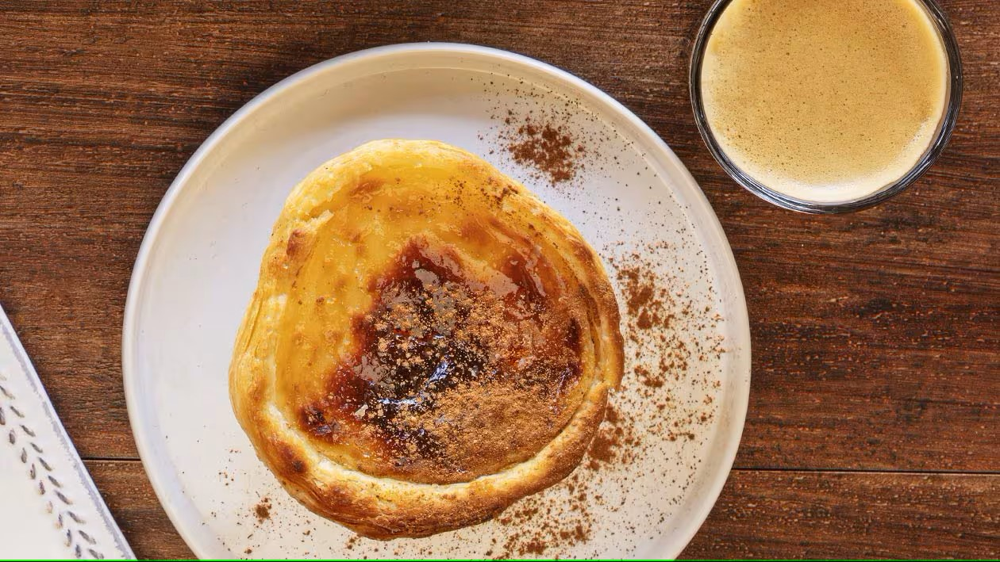
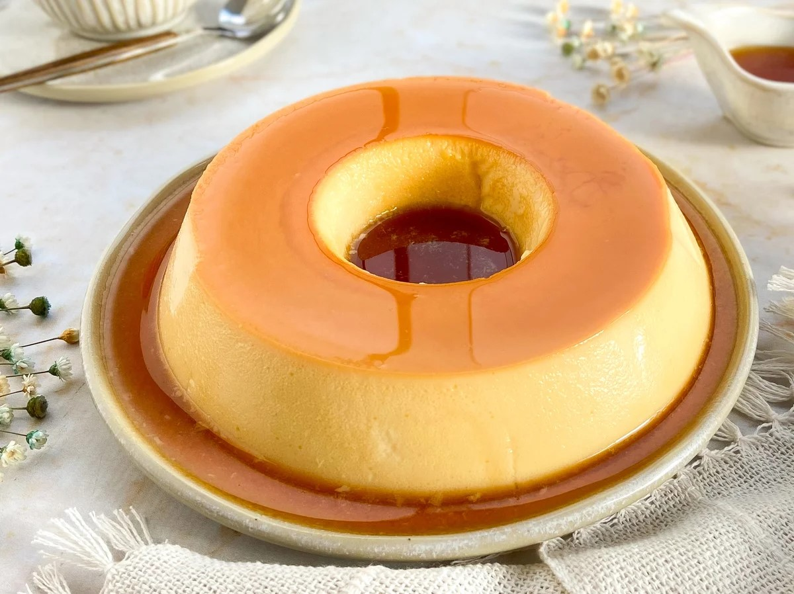
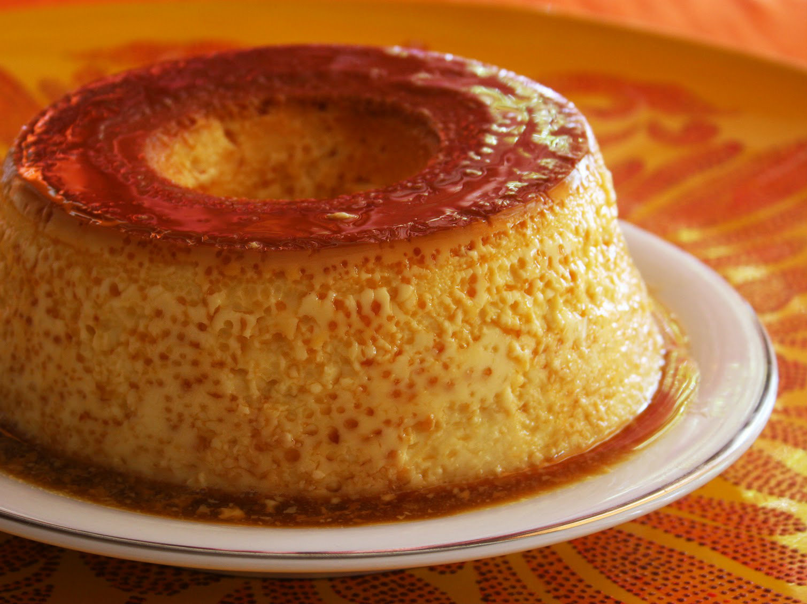
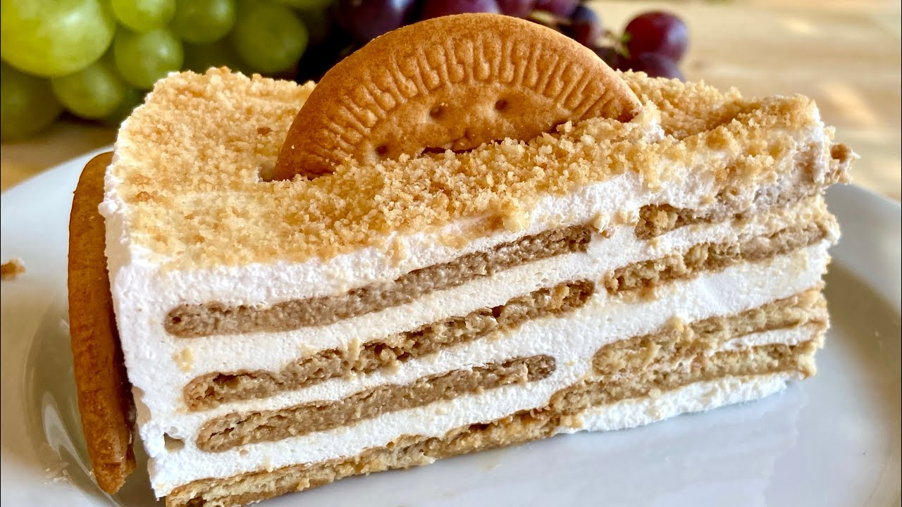

As Nossas Sobremesas

Pastel de Nata
O famoso pastel de nata português, com massa folhada crocante e recheio cremoso.
60 min
12 unidades

Mousse de Chocolate
Mousse de chocolate cremosa e aerada, uma sobremesa clássica e irresistível.
30 min
6 porções

Pudim de Leite
Pudim cremoso com calda de caramelo, uma sobremesa tradicional portuguesa.
60 min
8 porções

Azevias de Batata Doce
Deliciosas azevias tradicionais portuguesas recheadas com batata doce e canela.
45 min
12 unidades

Pudim de Pão
Um pudim delicioso feito com pão, leite e açúcar, perfeito para aproveitar sobras.
60 min
8 porções

Semifrio de Bolacha
Uma sobremesa deliciosa e fácil de fazer, à base de bolachas e natas.
30 min
8 porções